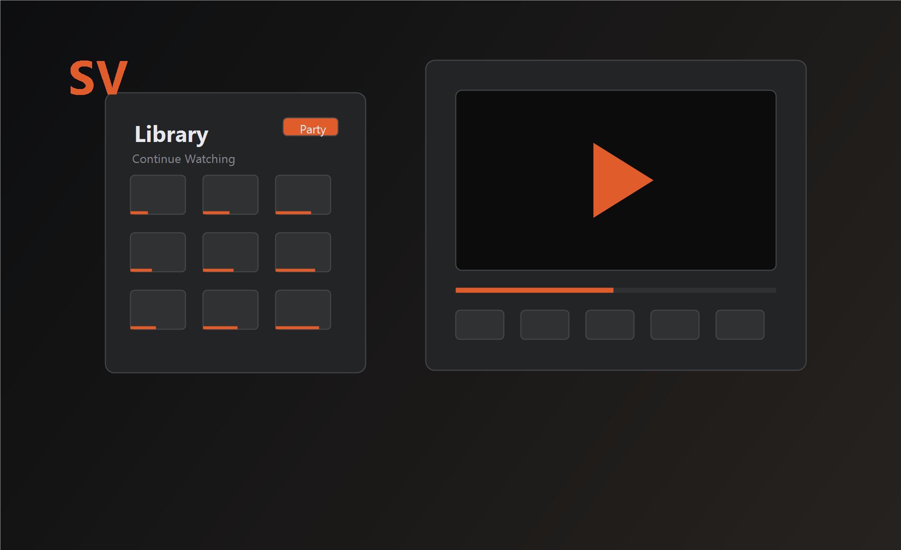

Library Manager
Add files, scan folders, organize collections, resume videos, rate titles, and clean missing entries after moving files around.

Windows media player
Build a local video library, keep your watch progress, encode files with HandBrake, and invite friends into synced Watch Party rooms.
Latest setup: StreamVault-Setup-1.5.0.exe, about 103.5 MB
Core app
Add files, scan folders, organize collections, resume videos, rate titles, and clean missing entries after moving files around.
Fullscreen controls, subtitle loading, picture-in-picture, aspect ratio modes, keyboard shortcuts, and reliable progress saving.
Import HandBrake presets, queue batch conversions, watch progress, and keep encoded copies where you want them.
Watch together
StreamVault rooms include synced play, pause, seek, chat, emoji reactions, recent rooms, server testing, and invite text you can send to friends.
Latest Windows setup
The Windows installer is hosted through GitHub Releases, so the download stays fast and works cleanly with GitHub Pages.